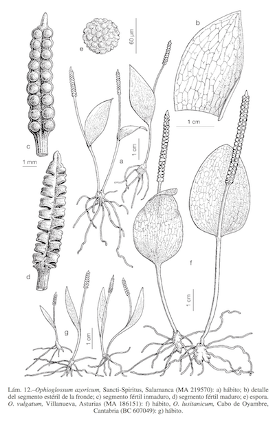
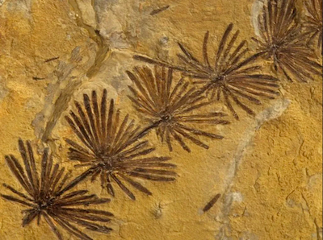
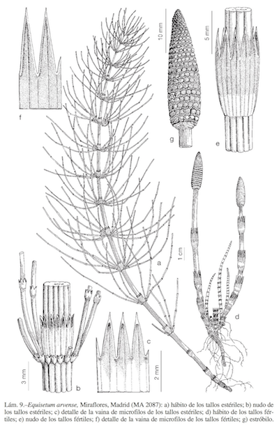
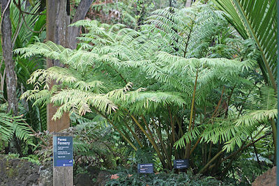

Tema 7.- Clase Polypodiopsida 2: helechos
eusporangiados
| Carlos Romero Zarco, Universidad de Sevilla |
| Orden
Ophioglossales |
|||||||||||
 Lámina de Flora iberica
|
|
||||||||||
| Orden Equisetales |
||||||||||
 |
 Lámina de Flora Iberica
A la izquierda, fósil de equisetal de 300 m.a. de antigüedad (Carbonífero superior). Foto: National Geographic |
|||||||||
| Orden Marattiales |
|||||
 Marattia salicina,
"kingfern", Nueva Zelanda
|
|
||||
|
|||||
|
|||||
|
|||||
|
|||||
| Resumen |
|